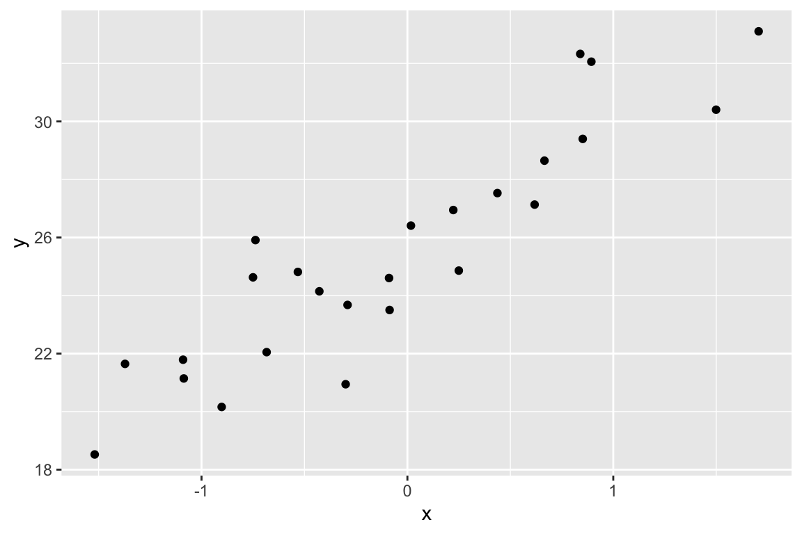

Chapter 7 Creating Fake Data
Fake data are generated by sampling from one of R’s random sampling functions. These functions sample from different distributions including
- uniform – function
runif(n, min=0, max=1), which samples n continous values betweenminandmax. - normal (Gaussian) – function
rnorm(n, mean=0, sd=1), which samples n continous values from a distribution with the specified mean and standard deviation. The default is the “standard” normal distribution. - poisson – function
rpois(n, lambda), which samplesncounts from a distribution with mean and variance equal tolambda. - negative binomial –
rnegbin(n, mu=n, theta), which samplesncounts with meanmuand variancemu + mu^2/theta.
7.0.1 Continuous X (fake observational data)
A very simple simulation of observational design (the \(X\) are not at “controlled” levels)
n <- 25
# the paramters
beta_0 <- 25 # the true intercept
beta_1 <- 3.4 # the true slope
sigma <- 2 # the true standard deviation
x <- rnorm(n)
y <- beta_0 + beta_1*x + rnorm(n, sd=sigma)
qplot(x, y)
How well does a model fit to the data recover the true parameters?
| Estimate | Std. Error | t value | Pr(>|t|) | |
|---|---|---|---|---|
| (Intercept) | 25.8 | 0.34 | 75.8 | 0 |
| x | 4.2 | 0.40 | 10.4 | 0 |
The coefficient of \(x\) is the “Estimate”. How close is the estimate? Run the simulation several times to look at the variation in the estimate – this will give you a sense of the uncertainty. Increase \(n\) and explore this uncertainty. Increase all the way up to \(n=10^5\). Commenting out the qplot line will make this exploration easier.
7.0.2 Categorical X (fake experimental data)
Similar to above but the \(X\) are at controlled levels and so this simulates an experimental design
n <- 5 # the sample size per treatment level
fake_data <- data.table(Treatment=rep(c("control", "treated"), each=n))
beta_0 <- 10.5 # mean of untreated
beta_1 <- 2.1 # difference in means (treated - untreated)
sigma <- 3 # the error standard deviation
# the Y variable ("Response") is a function of treatment. We use some matrix
# algebra to get this done.
# Turn the Treatment assignment into a model matrix. Take a peak at X!
X <- model.matrix(~ Treatment, fake_data)
# to make the math easier the coefficients are collected into a vector
beta <- c(beta_0, beta_1)
# you will see the formula Y=Xb many times. Here it is coded in R
fake_data[, Response:=X%*%beta + rnorm(n, sd=sigma)]
# plot it with a strip chart (often called a "dot plot")
ggstripchart(data=fake_data, x="Treatment", y="Response", add = c("mean_se"))
# fit using base R linear model function
fit <- lm(Response ~ Treatment, data=fake_data)
# display a pretty table of the coefficients
knitr::kable(coefficients(summary(fit)), digits=3)| Estimate | Std. Error | t value | Pr(>|t|) | |
|---|---|---|---|---|
| (Intercept) | 11.626 | 1.097 | 10.601 | 0.000 |
| Treatmenttreated | 2.100 | 1.551 | 1.354 | 0.213 |
Check that the intercept is close to beta_0 and the coefficient for Treatment is close to beta_1. This coefficient is the difference in means between the treatment levels. It is the simulated effect. Again, change \(n\). Good values are \(n=20\) and \(n=100\). Again, comment out the plot line to make exploration more efficient.
7.0.3 Correlated X (fake observational data)
7.0.3.1 Generating correlated X variables
It’s useful to think about how correlated data are generated because often we want to generate fake_data with an expected correlation. Let’s say we want to generate two X variables that have an expected correlation of 0.6. To generate this, we take advantage of the fact that two variables, X1 and X2, are correlated if they share a “common cause” – a variable Z that effects (or “causes”) both X1 and X2. If the expected variances of X1, X2, and Z are all 1, then the expected correlation between X1 and X2 is the product of the causal effect from Z to each X. The easiest way to implement this is to simply make the effect from Z to both X equal to \(\sqrt(0.6)\).
n <- 10^3
z <- rnorm(n) # the common cause, with sigma = 1
rho <- 0.6 # the true correlation between X1 and X2
beta_z <- sqrt(rho) # the easiest way to get effects of z on X1 and X2 that generates rho
sigma_x <- sqrt(1 - rho) # we will make the variance of X1 and X2 = 1, so the "explained" variance in X is beta_z^2 = rho so this is the sqrt of the unexplained variance
x1 <- beta_z*z + rnorm(n, sd=sigma_x)
x2 <- beta_z*z + rnorm(n, sd=sigma_x)
# check
cov(data.frame(X1=x1, X2=x2)) # is the diagonal close to 1, 1?## X1 X2
## X1 1.0523598 0.5978408
## X2 0.5978408 0.9713292## [1] 0.5913168
Now create fake \(Y\) that is a function of both \(X_1\) and \(X_2\). Create “standardized” fake data, where \(\sigma_Y = 1\).
beta_0 <- 3.2
beta_1 <- 0.7
beta_2 <- -0.3
explained_sigma <- beta_1^2 + beta_2^2 + 2*beta_1*beta_2*rho # Wright's rules! Compare to Trig!
sigma_Y.X <- sqrt(1 - explained_sigma) # sqrt unexplained variance
y <- beta_0 + beta_1*x1 + beta_2*x2 + rnorm(n, sd=sigma_Y.X)
# check
var(y) # should be close to 1 as n gets bigger## [1] 0.9791502## Estimate Std. Error t value Pr(>|t|)
## (Intercept) 3.1887712 0.02536483 125.716255 0.000000e+00
## x1 0.6885565 0.03064195 22.471043 8.422461e-91
## x2 -0.3037457 0.03189446 -9.523465 1.223898e-20Note that the variance of \(Y\) is the variance of the explained part due to X1 and X2 and the unexplained part and if the expected variance of \(Y=1\) then this sets an upper limit for the explained part. This means that
\[\begin{equation} \beta_1^2 + \beta_2^2 + 2 \beta_1 \beta_2 \rho < 1 \end{equation}\]
which means the magnitude of \(\beta_1\) and \(\beta_2\) should generally be less than 1.
7.0.3.2 Creating mulitple X variables using the package mvtnorm
The package mvtnorm provides a function to generate multivariate data (multiple columns) with a specified vector of means (the means of each column) and covariance matrix among the means.
rcov1 <- function(p){
# p is the number of columns or number of variables
pp <- p*(p-1)/2 # number of elements in lower tri
max_r <- 0.7
r <- rexp(pp)
r <- r*max_r/max(r)
# create correlation matrix
R <- matrix(1, nrow=p, ncol=p)
R[lower.tri(R, diag=FALSE)] <- r
R <- t(R)
R[lower.tri(R, diag=FALSE)] <- r
# convert to covariance matrix
L <- diag(sqrt(rexp(p))) # standard deviations
S <- L%*%R%*%L
# check -- these should be the same
# R
# cov2cor(S)
return(S)
}Now let’s use mvtnorm to generate fake correlated X
p <- 5 # number of X variables
S <- rcov1(p)
# make the fake X
n <- 10^5
mu <- runif(p, min=10, max=100) # vecctor of p means
X <- rmvnorm(n, mean=mu, sigma=S)
# how close? (check the cor as this is easier to scan)
cov2cor(S)## [,1] [,2] [,3] [,4] [,5]
## [1,] 1.0000000 0.15511020 0.11863165 0.48788949 0.14545246
## [2,] 0.1551102 1.00000000 0.70000000 0.03514487 0.04345391
## [3,] 0.1186317 0.70000000 1.00000000 0.05346376 0.54083807
## [4,] 0.4878895 0.03514487 0.05346376 1.00000000 0.44504979
## [5,] 0.1454525 0.04345391 0.54083807 0.44504979 1.00000000## [,1] [,2] [,3] [,4] [,5]
## [1,] 1.0000000 0.15618693 0.12146387 0.48987841 0.14569745
## [2,] 0.1561869 1.00000000 0.69709529 0.03879653 0.03961509
## [3,] 0.1214639 0.69709529 1.00000000 0.05598629 0.54138395
## [4,] 0.4898784 0.03879653 0.05598629 1.00000000 0.44214983
## [5,] 0.1456974 0.03961509 0.54138395 0.44214983 1.000000007.0.3.3 The rcov1 algorithm is naive
A problem with generating a fake covariance matrix as above is that it is likely to be singular as \(p\) get’s bigger. A singular covariance matrix is one where there are fewer orthogonal axes of variation then there are variables. Imagine a multidimensional scatterplot of a data set with the fake covariance matrix. If we zoom around this multidimensional space, we will come across a “view” in which all the points are compressed along a single line – that is there is no variation on the axis orthogonal to this line of points. This is bad, as it means we cannot fit a linear model using least squares (because the inverse of the covariance matrix doesn’t exist).
Let’s explore this. If the a covariance matrix is singular, then at least one eigenvalue of the matrix is negative (eigenvalues is a multivariate term beyond the scope of this text but, effectively, these are the variances of the orthogonal axes referred to above). Here I compute the frequency of covariance matrices with at least one negative eigenvalue as \(p\) increases
niter <- 1000
p_vec <- 3:10
counts <- numeric(length(p_vec))
i <- 0
for(p in 3:10){
i <- i+1
for(iter in 1:niter){
counts[i] <- ifelse(eigen(rcov1(p))$values[p] < 0, counts[i]+1, counts[i])
}
}
data.table(p=p_vec, freq=counts/niter)## p freq
## 1: 3 0.000
## 2: 4 0.025
## 3: 5 0.066
## 4: 6 0.135
## 5: 7 0.190
## 6: 8 0.225
## 7: 9 0.275
## 8: 10 0.3687.0.3.4 Generating multiple columns of X variables with a non-singular covariance matrix
This section uses some ideas from matrix algebra. The goal is to create a \(n \times p\) matrix of \(X\) variables that have some random covariance structure that is full-rank (not singular, or no negative eigenvalues). The algorithm starts with a \(p \times p\) random eigenvector matrix \(\mathbf{E}\) and a \(p \times p\) random eigenvalue matrix \(\mathbf{L}\) and then computes the random covariance matrix using \(\mathbf{E}\mathbf{L}\mathbf{E}^\top\)
- Generate a random \(p \times p\) random eigenvector matrix from a covariance matrix of \(p \times p\) matrix of random normal variables.
fake.eigenvectors <- function(p){
a <- matrix(rnorm(p*p), p, p) # only orthogonal if p is infinity so need to orthogonalize it
a <- t(a)%*%a # this is the sum-of-squares-and-cross-product-matrix
E <- eigen(a)$vectors # decompose to truly orthogonal columns
return(E)
}- Generate \(p\) random eigenvalues in descending order and that sum to 1. There are several ways to create this sequence. Here are two:
# force the eigenvalues to descend at a constant rate
fake.eigenvalues <- function(p, m=p, start=1, rate=1){
# m is the number of positive eigenvalues
# start and rate control the decline in the eigenvalue
s <- start/seq(1:m)^rate
s <- c(s, rep(0, p-m)) # add zero eigenvalues
L <- diag(s/sum(s)*m) # rescale so that sum(s)=m and put into matrix,
# which would occur if all the traits are variance standardized
return(L)
}
# random descent
fake.eigenvalues.exp <- function(p, m=p, rate=1){
# exponential distribution of eigenvalues
# m is the number of positive eigenvalues
# start and rate control the decline in the eigenvalue
s <- rexp(m, rate)
s <- s[order(s, decreasing=TRUE)] # re-order into descending order
s <- c(s, rep(0, p-m)) # add zero eigenvalues
L <- diag(s/sum(s)*m) # rescale so that sum(s)=m and put into matrix,
# which would occur if all the traits are variance standardized
return(L)
}- Generate the random covariance matrix
fake.cov.matrix <- function(p){
# p is the size of the matrix (number of cols and rows)
E <- fake.eigenvectors(p)
L <- diag(fake.eigenvalues(p))
S <- E%*%L%*%t(E)
return(S)
}- Generate the random \(X\) variables using \(\mathbf{X} = \mathbf{X}' (\mathbf{E}\sqrt{\mathbf{L}})^\top\)
# two functions to compute the random data
fake.X <- function(n,p,E,L){
# n is number of observations
# p is number of variables
X <- matrix(rnorm(n*p),nrow=n,ncol=p) %*% t(E%*%sqrt(L))
return(X)
}An example
n <- 10^5
p <- 5
E <- fake.eigenvectors(p)
L <- fake.eigenvalues(p, start=1, rate=1)
X <- fake.X(n, p, E, L)
colnames(X) <- paste0("X", 1:p)
E## [,1] [,2] [,3] [,4] [,5]
## [1,] 0.4762049 0.76679336 0.02189702 -0.37886958 -0.20306443
## [2,] -0.3226816 0.26514622 -0.21147219 0.50680583 -0.72387940
## [3,] 0.6343127 -0.07414265 0.40381446 0.65434666 0.03024185
## [4,] 0.2450305 -0.53523178 0.22900376 -0.40906173 -0.65856872
## [5,] -0.4546568 0.22305882 0.85982044 -0.06406746 -0.01166667E <- eigen(cov(X))$vectors
scores <- X%*%E
colnames(scores) <- paste0("pc", 1:p)
cor(cbind(X, scores))[1:p, (p+1):(p*2)]## pc1 pc2 pc3 pc4 pc5
## X1 0.6381822 0.71536319 0.009665104 0.2581645 -0.119317350
## X2 -0.5701649 0.32632936 -0.213505507 -0.4289443 -0.582102493
## X3 0.8417769 -0.06005797 0.312645510 -0.4358132 0.011149679
## X4 0.4130194 -0.64271492 0.232581875 0.3517727 -0.488358607
## X5 -0.6579685 0.23893819 0.712352851 0.0501983 -0.004418134